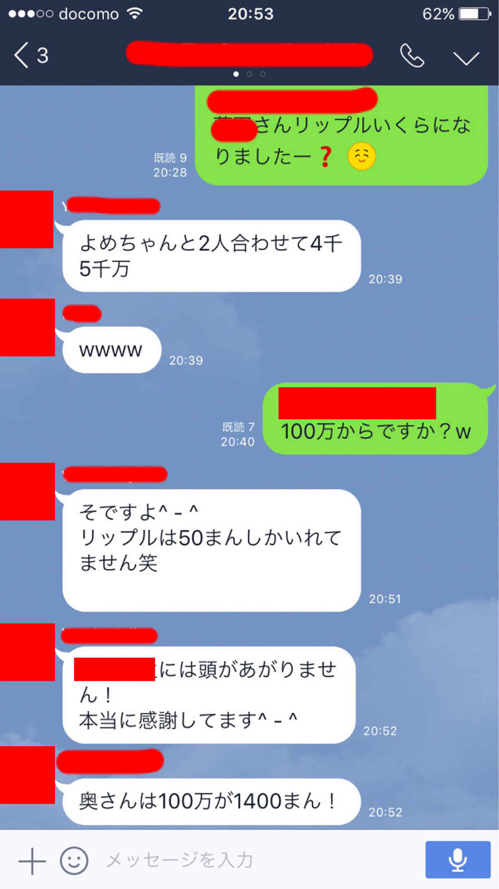
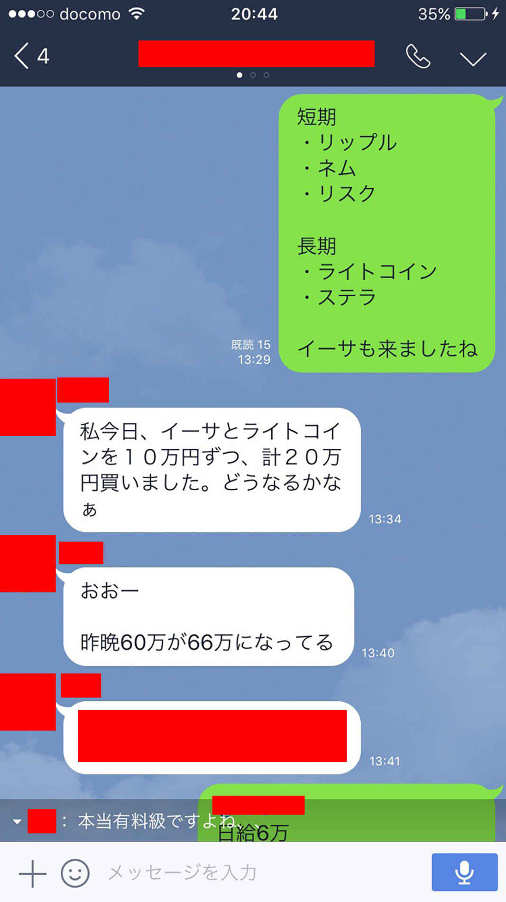

| ３０分でわかる「仮想通貨投資」超入門 | |
| 三好雄大 | |
| Hitotsuku Publication (2017) | |
３０分でわかる「仮想通貨投資」超入門
三好雄大
はじめに〜なぜ僕が仮想通貨投資をはじめたのか〜
仮想通貨のお話をする前に、そもそもなぜ私が仮想通貨に行き着いたのか、その経緯からお伝えしましょう。
現在、僕は仮想通貨以外に株、ＦＸ、ブックメーカー、あらゆる投資で収益を上げています。経済的にも、時間的にも制約を受けず、好きな時に好きなことができる状態を築いています。
ただ、そんな僕ですが、特別な才能があった訳ではありません。幼少のころは、両親から自由な教育を受け、縛られることなく毎日友達と遊びながら恵まれた子ども時代を過ごしてきました。自分のしたいことをしてきたので、「全ての判断と責任は自分にある」という価値観が染み付いています。その後、学生時代はアルバイトを20
社以上経験。社会人になってからも、自分の意志で数々の転職を繰り返し、理想のキャリアを追い求めます。
性格としては、仕事付きで真剣になると熱くなり、負けず嫌いな一面がある一方で、サボり癖や、ついつい作業中に動画に見入ったりすることもあります。そういった意味では、どこにでもいる普通の男性です。
●「子どものために」その想いが私を突き動かす
ただ、普通の男性と違うところがあるとすれば、一度離婚を経験しており、シングルファザーとして、二人の子どもを育てていることかもしれません。
可愛い子どものためなら、私はどんなこともやり抜くことができますし、その覚悟があります。
それだけに、「子ども達を幸せにできれば」と、しっかり真面目に働き、誰よりも仕事を頑張ってきた自負はあります。
しかし、現実は残酷なものです。どんなに頑張っても給料は上がらない毎日毎日しっかり真面目に働き、酒も飲まないし、遊びに行くこともない子どものために、贅沢は１ミリもしていない日々を過ごしてきました。
それなのに、何故か毎月の終わりには生活費もギリギリの状態で貯金できるお金も残っていない。会社と家庭の往復を毎日し、子育ても一生懸命頑張っているのになぜ？ 自分の中に、言いようのない不安が渦巻いてきました。
「この生活を続けたら将来どうなるのだろうか」
そんな恐怖心から、会社員の少ない給料では、子ども２人を生活させられないと思い、さまざまな副業について調べました。
スマホでネットに出てる商材を片っ端から調べ尽くし、毎月の給料を死に物狂いで貯め、いくつかの商材を購入して試してみました。
例えば、以下のようなものです。
－
ブログアフィリエイト
－
Twitter、Facebook を活用した集客コンサル
－
ＬＩＮＥ＠
塾
－
株のトレード
－
株の配信
－
ＦＸのコンサル
－
ＦＸの配信
－
転売
この他にも数え切れないほどの、ノウハウを購入しては、勉強してきました。とにかく、子どもたちのために必死でした。
しかし、結果として、どれも稼ぐことはできませんでした。毎月の給料を必死に貯め、生活費も切り詰めて購入し、背水の陣で臨んでも稼ぐことができない。
受け入れがたい現実が、僕を襲います。
●どん底に追い込まれ、改めて自分を見つめ直す
追い込まれた僕は、本当に、子どもを置いて何度も死ぬことを考えました......
これだけやって上手くいかないのであれば、もうダメではないか。ただただ、絶望感しかありませんでした。
しかし、どうしても捨てきれない想いがありました。
「子どもだけは幸せになってもらいたい」
そう強く思い、とにかく行動を起こしてきました。子どもたちの存在が、もう一度僕に火をつけたのです。
まずやったことは、その道で成功してる人たちに片っ端から会うことでした
ネットや書籍からの情報より、人からの情報はより貴重なものでした。僕が出会ってきた方々は、
・ネットワークのリーダーで、年収億越えの方
・ＦＸで年収億越えの方
・アフィリエイトで月収１００万円以上の方
などなど、そうそうたる実績を残してきた方々です。そして、この方々から一つ大きな学びを得ました。
「成功してる人は、ノウハウだけに頼らず、自分自身の力を高めている」
「力」とは、収入を稼ぐために必要な基礎力のことです。どんなに優れた仕組みを持ったビジネスに取り組んでも、それをやり抜く力や学び続ける姿勢がなければ成功することはできません。
まさに、稼ぐことのできる自分になることの大切さを学んだのです。
それを備えた上で、優れた仕組みを持つビジネスに取り組めば、自分が求める収入を得ることができます。その優れた仕組みが、まさにこれから紹介する「仮想通貨投資」なのです。
収入は、自分自身の自力と、ビジネスの仕組みの掛け算で決まります。
ここからは、皆さんが一番気になっている「仕組み」について紹介しましょう。
第１章 仮想通貨とは何か？全貌を徹底解説！
●仮想通貨は怪しくない
仮想通貨、暗号通貨という言葉を最近よく耳にするかと思います。以前はネットがほとんどでしたが、最近は新聞、雑誌、書籍でも目にするようになりました。
この仮想通貨、まだまだ世間的には十分に認知が進んでいるとは言えません。多くの人はこのように思っているのではないでしょうか。
「よく分からないけど、なんだか怪しい」
確かに、仮想通貨に関わる詐欺などの話を聞いていると、このような印象を持ってしまいがちです。しかし、これは仮想通貨自体が怪しいのでしょうか。
厳密にいうと、怪しいのは詐欺を行っている人間です。仮想通貨は、あくまで仕組みであり、怪しさの原因ではありません。
多くの人は、この段階で諦めてしまいます。そして、仮想通貨を学ぶことはなく、千載一遇のチャンスを逃してしまうのです。
重要なことは、周囲の噂やなんとなくの印象で勝手に判断せず、自分でしっかり調べて本質をつかむことです。これも、先ほどお伝えした「稼ぐ力」の一部になります。
●仮想通貨は、未来のお金の姿
前置きが少し長くなりましたが、ここから仮想通貨とは何かについてお伝えしましょう。
仮想通貨は、一言で言えば「管理する中央機関無しに、お金のやり取りができる新たな仕組み」になります。もう少し詳しく説明すると「管理する中央機関無しに、Ｐ２Ｐという技術を用いてお金を低コストで送金するアプリケーション。安全に送金できるよう、ブロックチェーンという最新のテクノロジーを用いて、その記録が改ざんされないようにしている」と言えます。
「Ｐ２Ｐ」や「ブロックチェーン」といった聞きなれない言葉が出てきましたが、これについては後ほど簡単に説明します。
まず押さえておきたいことは、仮想通貨は「アプリケーション」であるということです。
皆さんは、パソコンやスマートフォンでメーラーやＳＮＳなどのアプリケーションを利用していると思いますが、大枠でいえば仮想通貨もその一つになります。
通貨と聞くと、つい硬貨や紙幣を浮かべる人が多いはずです。しかし、この常識に囚われていると、仮想通貨に関する理解が進みません。新しい概念や事象に出会った際は、常識を捨てることも重要です。
しかし、まだ混乱している方もいらっしゃるはずです。
「そしたら、どうやって支払いなどができるようになるのか？」
そこで、次は仮想通貨がどのように使えるかについて説明していきましょう。
●仮想通貨の仕組み
仮想通貨は、お金を渡したい人にダイレクトに送金できるのが特徴です。通常、お金を送る際は、銀行などの第三者機関を経由するのが一般的です。しかし、仮想通貨は、このような仲介者の存在を必要とせず、直接お金のやり取りができるのです。
やり方は、皆さんが普段利用しているメールの送信とほぼ一緒です。送金したい相手のアドレスを指定し、そこに送金したい仮想通貨の量を記載します。あとは、送信ボタンを押すと、相手に仮想通貨が届くというものです。先ほど「Ｐ２Ｐ」という言葉がありましたが、これがまさにお金を送りたい相手とダイレクトにやり取りする仕組みになります。
ですが、ここで一つ疑問に思うことがあります。「お金のやり取りが正常に行われていることを誰が証明するのか」。これは非常に重要な概念になります。もし、これが正常に働いていないと、所持している仮想通貨が勝手に持っていかれる可能性もあります。こんなことが起きては、通貨として利用することはできません。
しかし、これについてもしっかりと仕組みが用意されています。それが「ブロックチェーン」という技術です。ブロックチェーンについては、詳細を説明するとこれだけで一冊の書籍が出来上がりますので、ここでは概要を説明します。
ブロックチェーンを用いることで、送金の履歴は安全に記録されます。そして、この記録は、データが消えないよう世界中にあるコンピュータに保存され、管理されています。これにより、お金のやり取りが担保され、安心して利用できるようになるのです。
●通貨のようで、通貨でない
ここまでの説明を聞くと、「電子マネー」のやり取りに近いと感じる方もいらっしゃるでしょう。お金のやり取りが完全デジタルになっている点はまさに電子マネーと一緒です。
仮想通貨は、よく「分散台帳」であると言われていますが、その理由は先ほどお伝えしたように、あくまで「デジタルでお金のやり取りが保存される」ことにあるのです。そういう意味では、私たちの感覚からすると、「通貨」というよりは「台帳」と理解する方が感覚的には合うといえるでしょう。
さて、先ほど電子マネーと仮想通貨は似ている点があるとお伝えしましたが、異なる部分もあります。それは、電子マネーはあくまで法定通貨をベースにしているのに対し、仮想通貨は法定通貨とは切り離されていることです。電子マネーは、法定通貨をデジタル化してやり取りできるようにしているだけです。しかし、仮想通貨は法定通貨に縛られることはありません。
これが、「管理する中央機関が無い」という点に結びついてきます。
●法定通貨、電子マネーとの違い
ここから仮想通貨は、「管理する中央機関が存在しない」ということについて説明します。これを理解することで、仮想通貨に関する理解をより深めることができるでしょう。
仮想通貨についてよく質問を受けるのが「円やドルと何が違うんですか」というものです。私たちにとって通貨は、日本円やドル、ユーロなどが当たり前になっています。まずは、これらの通貨との違いに理解していきましょう。
普段、私たちが使っている日本円は、日本銀行や日本政府といった通貨を管理する中央機関が存在します。この中央機関が、市場に流通する通貨量をコントロールしていきます。ここ数年であれば、日銀が「異次元の量的緩和を行った」として、ニュースによく取り上げられていました。いわゆる、円などの法定通貨は、管理する中央機関の手によってコントロールされ、価値が決まってきます。
この中央機関がコントロールできるという点が、法定通貨のデメリットにもなります。すなわち、中央機関の手によって通貨の量が増えれば、その通貨の価値は下がる可能性があります。また、発行主体である政府が、国外へのキャピタルフライトを恐れて、国内の銀行の預金口座を封鎖してしまうことも可能です。本来、国民の資産へ政府が介入するのは望ましいことではありません。しかし、近年では、ギリシャやキプロス、アルゼンチンなどでこのようなことが起きています。日本人にはピンとこないかもしれませんが、中央機関に通貨をコントロールされるというのは、リスクの一つとなるのです。
一方で、仮想通貨はどうでしょうか。先ほど「管理する中央機関が存在しない」とお伝えしました。これこそが、仮想通貨と法定通貨の一番の違いです。最初にお伝えした通り、仮想通貨は、仮想通貨はコンピュータ上で動くアプリケーションです。それゆえ、アプリケーションの動作は全てプログラミングされているのです。
あらかじめ決められたプログラムに則って、通貨を発行するタイミングや量が決められているのが、仮想通貨の大きな特徴です。これによって、中央機関の意思が、通貨の価値に影響を与えることがありません。仮想通貨の価値は、プログラムによって発行されている通貨の量と、市場における取引量に応じて決定されるのです。
このように、仮想通貨は従来の法定通貨と決定的な違いを持っているのです。この本質的なところを理解すると、仮想通貨に対する世間の評価が的外れであることが理解できるはずです。繰り返しになりますが、本質を理解すると、「何が正しいか」判断できるようになるのです。仮想通貨へ投資するのであれば、最低限ここで記載されている内容は押さえておいてください。
この章では、仮想通貨そのものについて説明してきました。次の章では、なぜその仮想通貨投資が熱いのかお伝えしましょう。
第２章 なぜ、仮想通貨が今一番熱いのか？
先ほどの章では、仮想通貨がどのようなものか分かりやすくお伝えしました。細かい技術的なことは、皆さんが仮想通貨に馴染み、少しずつ理解できるようになれば良いでしょう。取っ掛かりとしては、前の章にある内容を把握しておけば十分です。
ただ、まだ疑問をお持ちの方もいらっしゃることでしょう。「仮想通貨の概要は理解できたけど、果たしてどんなメリットがあるのか？」。仮想通貨が盛り上がっている今、この部分をしっかり理解することで、この盛り上がりが単なるバブルではなく、時代の潮流であることが理解できるでしょう。仮想通貨の仕組みは、通貨の仕組みだけでなく、社会の仕組みを大きく変える可能性を秘めているのです。
この章では、仮想通貨のメリットをお伝えするとともに、仮想通貨の存在を後押しする世の中の動きも合わせて紹介していきましょう。先程の章が、仮想通貨に対する理解を深める場であるならば、この章の存在は仮想通貨投資の確信を深める場になるでしょう。
●仮想通貨の４つのメリット
まずは、仮想通貨の４つのメリットから見ていきましょう。いずれも、既存の法定通貨にはない、メリットになります。
・送金のコストが圧倒的に安い
仮想通貨のメリットは、送金のコストがほとんどかからないことです。先ほどの章でお伝えした通り、仮想通貨はメールをやり取りするかのように、簡単に送金することができます。これは、相手がいつどこにいても送金することができ、相手はインターネットが繋がった環境であれば、いつでも受け取ることができます。
従来の法定通貨を用いた早期の場合、銀行口座を通じて行われることがほとんどです。その場合、銀行に振込み手数料を支払う必要があります。また、海外送金の場合は、さらに高額な手数料が必要なうえ、金融機関の審査によりさらに時間がかかってしまいます。
この従来の送金に関わる問題をクリアにしてるのが仮想通貨です。仮想通貨は、これまでよりも圧倒的に早く、安くお金を送ることができるのです。これにより、今後世界的なお金の流れは今までとは比較にならないスピードで循環していくことが予想されます。世界経済に与える影響や存在感も日に日に増していくことでしょう。
・決済手数料がほとんどかからない
手数料のことで言えば、決済手数料がほとんどかからないというメリットもあります。最近、ビットコインで決済が可能というニュースが増えています。大手家電量販店ビックカメラや格安航空会社ピーチ、などビットコインの活用は様々なところで広がっています。仮想通貨を決済で要する背景は、 インバウンドの観光客による利用促進という側面もありますが、もう一つは決済手数料の問題をクリアにすることです。例えば、クレジットカード決済によるお店側の負担は、およそ５パーセントほどにもなると言われています。利益率が薄いビジネスを行っている企業であれば、この負担は決して小さいものではありません。
仮想通貨を用いた決済が普及することで、この決済手数料に関わる問題はやがてクリアされるかもしれません。決済手数料の負担が減ることで、もらえるスモールビジネスを展開している事業主などは大きな恩恵を受けることでしょう。また、企業にとっても薄利多売のビジネスを展開している企業は、利益率が改善され、従業員の給与アップや新たな事業投資などが展開され、世の中の技術がさらに活発化していくかもしれません。
・偽札が流通しない
日本人にはピンとこないかもしれませんが、偽札の問題は世界的に大きな問題になっています。国によっては、市場に出回っている紙幣の２割から３割は偽札という説もあるくらいです。また、このような偽札の流通を極力防ぐため、国によっては高額紙幣の利用を停止した例もあります。インドでは昨年、これまで利用可能だった紙幣が、新札への交換を理由に急遽使えなくなりました。あまりに急な発表だったため、国民が新紙幣への両替に殺到する事態が発生。これにより、一時新紙幣の供給が追いつかず、国が大混乱に陥りました。
日本の場合、紙幣や硬貨の偽造が非常に難しいこともあり、偽札が流通することはほとんどありません。しかし、これは世界的に見ると非常に稀有なことです。この偽札の問題を解決するために、頭を悩ませる国もあるくらいです。
偽札が出回ってしまうと、思わぬ形で貨幣の流通量が増えてしまい、貨幣そのものの価値が大きく低下するリスクがあります。また、テロ集団への資金供給など思わぬ形で進んでしまう可能性もあるのです。
・管理主体がいない
第一章でもお伝えしたとおり、仮想通貨には発行元となる中央機関が存在しません。実は、これも仮想通貨のメリットの１つとなるのです。通常の法定通貨であれば、政府の意向によりその流通量が決められます。また、政策などが間接的に通貨の価値に影響を与えます。これを当たり前と私たちは考えていますが、改めて考えてみると、自分の資産価値が政府によってコントロールされてしまうという見方もできます。
海外に目を向けると、国がデフォルトを起こし、その国の通貨価値が急落するという事例も発生しています。これも日本人ではピンとこないかもしれませんが、世界の多くの国では、このような可能性も資産を運用する上で念頭に置いておかねばなりません。
一方、仮想通貨の場合は、法定通貨の政府に当たるような管理主体が存在しません。先ほどお伝えしたとおり、プログラムに則って粛々と決められた量の通貨を発行したり流通させたりするだけです。これにより、第三者の意思により突然通貨の価値が下がるようなことは起こりません。管理主体が存在しないことで、私たちの資産はより安全に守られることになるのです。
●仮想通貨を取り巻く状況
仮想通貨のメリットについて、理解は深まりましたでしょうか。このようなメリットがあるがゆえに、仮想通貨は今、熱い状況にあります。ただ、この熱い状況がなんなのか、分からない方もいることでしょう。
ここでは、仮想通貨を取り巻く「熱い状況」について皆さんにお伝えします。繰り返しになりますが、仮想通貨は、もはやバブルではなく一種のムーブメントになっています。
・仮想通貨利用促進のための法改正
日本では、仮想通貨の利用がより促進されるよう法整備が進められています。例えば、今年の４月から施行された「改正資金決済法」において、仮想通貨の利用を法的に位置づけるよう規制が盛り込まれています。規制と聞くとあまりいい印象を持たないかもしれませんが、この規制とは、私たちが安心して仮想通貨を使えるようにしたものです。
仮想通貨は、法的には正式な通貨としては位置づけられていません。しかし、昨今の情勢を踏まえ、国としてもなにがしかルールを作り、貨幣に近い形で仮想通貨を位置づけられるよう動き、「改正資金決済法」を成立させたのです。
改正資金決済法の内容の１つに、取引所の登録制度があげられます。仮想通貨を手に入れる場合、仮想通貨の取引所で通貨を得る必要があります。これまでは、仮想通貨の取引所に関する法的な規制がなく、ありませんでした。しかし、通貨に近いものを扱うのであれば、参入に一定の条件をつけなければ、どんな企業が参入してくるか分かりません。利用者保護の観点から、資本金や取引所のセキュリティー対策などの条件を満たした企業が取引所に登録できるようにしたのです。
２０１４年に仮想通貨の取引所・マウントボックスが破綻し、その影響で仮想通貨に疑念を持つ人が増えました。今回の法改正は、このようなことが今後起こらないよう国で取り決めを作ったといえます。
また、今年７月からは、仮想通貨の取引を行う際にかかっていた消費税がなくなります。これまで「モノ」として取引されていた仮想通貨が、より通貨としての位置づけに近づくよう、また一歩進んだのです。
このように、日本においては仮想通貨の利用促進が進むよう法整備が着々と進んでいます。 政府も無視できないほど仮想通貨の存在感が大きくなっているといえます。
・自らの資産を守る
「自国通貨の暴落に備えて、自分の資産をどのように守るか？」
日本人でここまで考えている人は少ないと思いますが、国によってはこのようなことも念頭に置いて運用している資産家もいるのです。自国通貨が暴落するタイミングというのは、国がデフォルトするタイミングでもあります。その時に備えて、仮想通貨を用いて資産を逃避させることもあります。
例えば、キプロスでは金融危機が発生し、国により預金封鎖が実施されました。 その際、一部の人は資産を守るため、ビットコインへの換金を進めました。 仮想通貨は、突然使えなくなるリスクは極めて低いです。資産が凍結される前に、仮想通貨に換金しようという考えがあるのです。
ここ数年、ギリシャやアルゼンチンなどでもデフォルトによる自国通貨の暴落が発生しています。多額の借金を抱える日本も、人ごとと捉えるのは危険かもしれません。
・寄付やクラウドファンディングでも活用
主にビットコインになりますが、仮想通貨の送金性を活かして、国をまたいだ寄付やクラウドファンディングでも利用されるようになっています。
日本人の感覚からすると、「投げ銭」のようなイメージです。大道芸の方に、ショーが終わってからお金を渡すことを想像される方がいらっしゃるかと思いますが、多くの人が小額のお金を出し合う点では、まさに投げ銭です。例えば、国内最大手のＱ＆
Ａサイト、ＯＫＷａｖｅでは、ビットコインによる謝礼の支払いができるようになっています。これは、質問に対してベストアンサーをした方へ、お礼としてビットコインを送るというシステムです。金額は、少額でも全く問題ありません。その回答が良ければ、より多くの方が回答者へビットコインを送るからです。
また世界的には、ネパールの大震災の際に、報道されてから10
時間後に１００ビットコインが集まったという事例があります。従来であれば、国を超えて寄付をするということは、これほどスピーディーにはできませんでした。しかし、仮想通貨の技術を使うことで、このようなことが可能になり、特に非常事態の際に迅速に使用することが可能になるのです。
●仮想通貨は、世の中で当たり前のものになってきている
ここまで見てきたように、仮想通貨の存在感は日に日に高まってきています。送金性の良さ、管理主体がいないことを活かして、様々な形で利用が進んでいるのです。今後、決済できる店舗が増えてくると、さらに存在感は大きくなり、価値は高まるでしょう。ちなみに、店舗決済の件では、今年の５月に↓のようなニュースがありました。
コンビニでビットコイン決済、国内で数十万店舗の可能性も
https://www.bloomberg.co.jp/news/articles/2017-05-29/OQJQ8W6JTSEL01
なんと、コンビニで使えるようになるかもしれないそうです。どのコンビニかは明らかになっていませんが、上場しているということを考えると皆さんのご自宅の近くにある大手コンビニであることは間違い無いでしょう。
このように、ビットコインに関する情報は毎日のようにアップデートされています。ぜひ注意深くチェックしてみてください。
さて、ここまで仮想通貨の概要と取り巻く状況について十分理解が進んだことでしょう。次の章では、実際のどのような仮想通貨があるのか、代表的なものを紹介します。
第３章 これであなたも仮想通貨長者！購入から運用までの流れを大公開
この章では、仮想通貨の買い方から、どんな仮想通貨があるかまで紹介します。また、「せっかく投資するからには儲けたい」という方のために、大まかな投資方法についてお伝えします。
●仮想通貨の購入方法
それでは、まずどうやったら仮想通貨が手に入るか紹介しましょう。
仮想通貨は、取引所にアカウントを開設し、そこで購入した通貨を電子ウォレットで管理します。取引所・電子ウォレットも様々ありますが、ここでは使いやすく仮想通貨をこれから始める方にオススメな Coincheck の作成を方法をお伝えします。
・Coincheck でウォレットを作るには
それでは、Coincheck のウォレット作成について紹介します。
手順はとっても簡単で、まず Coincheck のアプリをダウンロードします。例えば、iPhone であれば、iTunes から、Android であれば Google Play からダウンロードして、インストールします。
Coincheck の登録がまだの方は、こちらからご登録ください。
→Coincheck
その後、アプリを立ち上げると、次の画面が出てきますので、ＩＤとパスワードを設定します。

(出典 https://coincheck.com/faq/696
)
その後、入力したメールアドレスに確認メールが送付されます。そのメールにリンクが記載されているので、クリックすると登録が完了します。
(出典 https://coincheck.com/faq/696
)
ウォレットが作成できたら、銀行口座から日本円を入金して仮想通貨を購入します。また、どなたか知り合いの方から仮想通貨を送ってもらうことで、ゲットすることもできます。
このように、スマホ一台あれば、簡単にウォレットが作れるのです。
●とっておきでオススメの仮想通貨を紹介！
ウォレットを作成できれば、いよいよ仮想通貨を購入することができます。
しかし、仮想通貨は毎日のように新たなものが誕生しており、その種類はすでに７００種類以上誕生しているともいえます。とてもではありませんが、全てを知ることはほぼ不可能です。
ただし、仮想通貨も現時点で主軸になるものが複数あります。ここでは、代表的な３つの通貨についてご紹介します。
１、ビットコイン
まず、理解しておきたいのがビットコインです。ビットコインが、現在７００種類以上ある仮想通貨の源流になります。それだけにビットコインを知ることが他の仮想通貨を理解することにつながります。
・全ての仮想通貨はここ始まった
ビットコインは一人の天才の論文から生まれました。２００９年、サトシ・ナカモトを名乗る人物によって投稿された論文が世界中にインパクトを与えました。その後、有志によりビットコインの開発が進められます。ちなみに、このナカモト氏の正体は現在も明かされていません。
このように、ビットコインは、仮想通貨のシステムの原型となっています。Ｐ２Ｐ型のネットワークにより送金が可能で、トランザクションは仲介者の存在無しでユーザ間でダイレクトに行われます。このトランザクションはネットワークに参加しているコンピュータによって監視され、ブロックチェーンに記録されていきます。尚、トランザクションでは通貨単位としてビットコイン(ＢＴＣ)が使用されており、これが取引所で扱われます。
・ビットコインを支える、マイニングという仕組み
ビットコインはトランザクション処理作業を行う人に対して、報酬という形でＢＴＣが新規に発行されます。この処理作業を行う人たちのことをマイナーといいます。
ビットコインではこのマイナーが計算能力を提供することでトランザクションが確認され、ブロックチェーンに記録されます。
ビットコインはマイニングにより入手もできますが、先ほどウォレットの作成でもお伝えしたとおり、日本円のような他の通貨などと交換することもできます。
・ビットコインのメリットとデメリット
ビットコインは、２章でお伝えした仮想通貨のメリットを全て兼ね備えています。送金の手数料の低さ、管理主体がいないことはビットコインのメリットにもなります。
しかし、ビットコインにはデメリットがあるのも事実です。その一つが、トランザクションが承認されるまので時間と、時間あたりのトランザクション量です。ビットコインは、承認されるまでに10
分の時間を要します。私たちが普段決済をする時、その所要時間を意識することはほとんどありません。10
分という時間は、トランザクションをセキュアに承認させるために必要な時間になりますが、実用面で見るとデメリットといえるかもしれません。
また、時間あたりのトランザクション量も大きな課題です。ビットコインは、トランザクション量が少なく、送金遅延などの問題も発生します。この１年で急激に普及した影響もあり、ビットコインは今後の運用について様々な議論が生まれています。
このように、ビットコインにはデメリットはあります。しかし、だからといって、ビットコインの偉業が色褪せることはないでしょう。ビットコインの存在が、仮想通貨を世に知らしめるきっかけになった事実は変わりません。また、ビットコインのメリットを活かし、デメリットを改善した仮想通貨が世の中に出回っています。ビットコインを理解することが、他の通貨の本当の良さを理解することにつながるのです。
２、イーサリアム
ビットコインに次いで時価評価総額２位の通貨がイーサリアムです。イーサリアムは、２０１７年に入り、急速にその価値を高めてきた通貨の１つです。その勢いは凄まじく、今やビットコインに迫り勢いで伸びています。
このイーサリアムの伸びは、単なるバブルではなく、イーサリアムの実績によるところが大きいと考えられます。イーサリアムは、世の中の仕組みを根本から変える可能性を秘めています。それは、通貨による決済という枠を超え、社会の契約に関するあり方を大きく変えていくかもしれません。そんなイーサリアムについて理解を深めておくと、仮想通貨に対する投資がやりやすくなるでしょう。
・イーサリアムの特徴
イーサリアムも、ブロックチェーンを使うところはビットコインと同様です。しかし、根本的に異なるところが１つあります。ビットコインは、ビットコインのやり取りをした情報のみを記述できるのに対し、イーサリアムは契約を執行する対象者や日時に関しても情報に残すことができます。
わかりやすく例え話でお伝えしましょう。
例えば、皆さんが土地の売買をしていたとします。土地の売買をする上で、必要な情報は金額に関するものだけでなく、建物の情報や受け渡し日などが必要になります。決済目的の仮想通貨の場合、ブロックチェーンに書き込めるのはお金のやり取りに関する情報のみになりますので、土地の売買契約のようなケースでは利用できません。しかし、イーサリアムであれば、金額以外の情報も書き込めるので、このような契約に関わる情報をブロックチェーンに記録することができるのです。
このように、契約内容をブロックチェーンに書き込むことで、その内容が改ざんされたり、不履行になるリスクが無くなります。契約につきまとうトラブルが発生しないようになり、いわゆるスマートコントラクトを実現するのです。イーサリアムが世の中の契約に関するあり方を変えるかもしれないと述べたのは、このような事情があったのです。
このイーサリアムを活用したスマートコントラクト社会を実現しようと、現在企業でエンタープライズ・イーサリアム・アライアンス(通称ＥＥＡ)という組織が立ち上がっています。マイクロソフトやインテル、ＪＰモルガンなどの外資系企業が主に参加していましたが、今年６月にはあのトヨタ自動車や三菱ＵＦＪなど日本企業の参入も相次いでいます。このように、日本の大企業も無視できないくらいイーサリアムは大きな注目を集めているのです。
・イーサリアムで起きた「ハードフォーク問題」
このように、現在伸びているイーサリアムですが、かつては仮想通貨の世界に大きな衝撃を与える事件が発生しました。それが「ハードフォーク」というものです。
仮想通貨におけるハードフォークとは、通貨が分裂することを意味します。Ａという通貨から、ある日互換性のないＢという別の通貨ができるのです。これは、仮想通貨において重要な問題です。通貨が分裂するということは、既存の通貨の価値が損なわれる可能性もあるためです。実は、このイーサリアムも一度分裂しており、現在はイーサリアム(ＥＴＨ)、イーサリアムクラシック(ＥＴＣ)の２種類があります。主流となっているのは、分かれたＥＴＨの方ですので、もし購入する際は十分に気をつけてください。尚、ＥＴＣも価値はついており、先ほど紹介した Coincheck で購入可能です。
ハードフォークの問題は、ビットコインにもつきまとっています。実際、２０１７年３月にビットコインがハードフォークするのではないかとニュースが流れた際は、ビットコインの価格が急落しました。それだけに、仮想通貨投資家にとっては常に注意しておきたいところです。
３、リップル
イーサリアムに負けないくらいの勢いで伸びた仮想通貨として、このリップルも忘れてはいけません。
リップルは、２０１２年に国際決済のためのブロックチェーンとして公開されました。国際決済という目的を持っており、ビットコインとは異なる側面を持ちます。
リップルは、ＩＯＵと呼ばれる借用証明書を用いて企業間のやり取りが行われます。当事者同士間でお金のやりとりではなく、借用証明書を用いて取引を行うのです。これにより、お金そのものを送るよりも、コストを抑えて資産の移転が可能になります。
このリップルの実用化に向けては、みずほフィナンシャルグループやＳＢＩホールディングスが実証実験に参加しています。それだけ、この技術に対する期待が高いといえます。特に、ＳＢＩグループは、「SBI Ripple Asia」を設立。ブロックチェーン技術を活用した各種フィンテックソリューションの開発や、それらに関するコンサルティング業務の他に Ripple 社の各種ソリューションの金融機関への拡販などを進めるそうです。リップルを商用利用して、ビジネス展開が進んでいくことで、リップルそのものの価値が今後さらに高まることが予想されます。
●クラウドセール(ＩＣＯ)により、日々新しい通貨が誕生
ここまで、仮想通貨の代表的な３つの通貨を紹介してきました。現在、この３つが仮想通貨市場におけるトップ３に君臨しています。これらの通貨価値が簡単に落ちることはないと思われますが、最初にお伝えしたとおり仮想通貨はすでに７００種類あると言われています。また、仮想通貨を用いたクラウドセールという新たな資金調達手法が進んでおり、それに伴い日々新しい仮想通貨が誕生しています。クラウドセールは、うまくいくと数億単位の資金が一瞬で調達できることから、今後もスタートアップを中心に利用が進んでいくことでしょう。この手法は、株式公開のＩＰＯにならい、ＩＣＯ(Initial Coin Offering)と呼ばれ、大きな注目を集めています。今後は、このＩＣＯという言葉をニュースなどで頻繁に聞くことがあるかもしれません。
●仮想通貨の覇権を握るのはどの通貨か？
仮想通貨に関わる情報は日々アップデートされ、トップ３を占めるビットコイン、イーサリアム、リップル以外の通貨がその存在感を高めても不思議ではありません。それだけに、投資をする際は、日々情報収集を行う必要があります。
しかし、中には忙しくてそんな時間もないという方がいらっしゃるでしょう。そんな方は、本書の最後にある僕が立ち上げている「三好裏マガジン」を活用すると良いでしょう。最新の情報を効率的に手に入れることが可能です。
第４章 仮想通貨長者が続々誕生！今すぐ始めた方が良い３つの理由
ここまで、仮想通貨の概要やそれを取り巻く状況についてお伝えしてきました。また、どのような仮想通貨があるか大まかに理解できていることと思います。「はじめに」で述べたように、仮想通貨は単なるバブルではありません。これからさらに価値を持ち、投資対象としても魅力的な商品になっていくでしょう。
仮想通貨に対する理解が深まった皆さんに、この章では「なぜ仮想通貨に投資をして、資産を築いていく必要があるか？」についてお伝えします。仮想通貨投資が良いものであると理解できても、それをやる理由が見えなければなかなか動き出せないのが人間の本性です。
現代の日本を取り巻く社会情勢なども踏まえて、仮想通貨投資をすぐに始める方が良い３つの理由をお伝えしましょう。
●仮想通貨投資をすぐ始める方が良い３つの理由
理由１ 土地神話の崩壊、安全資産は無くなった
「持ち家は資産である」という言葉を皆さんはよく聞いたことがあると思います。この本の読者の方でも、すでにマイホームを持っている方もいらっしゃるでしょう。確かに、持ち家は資産になります。ローンの返済が終わった時点で、正式に皆さんのものになります。
しかし、だからといって資産価値を持つかどうかは全くの別問題です。かつての日本は、土地の価格は下がらないというルールが働いており、実際バブルが崩壊するまでは土地の価格は上昇し続けました。これにより、マイホームを持っている人は、それが資産として価値を上げ続けることになります。
ところが、バブル崩壊後、この神話は脆くも崩れ去ります。老後の生活に必要な資産のもとになる土地やマイホームは、その価値を維持することが難しくなりつつあります。実際、土地の価格は東京の一等地を除き、全国的に下落傾向にあります。
・他にどのような手段で資産を築くのか
持ち家がダメなら、他の手段で資産を築くしかありません。しかし、これまで一般的に資産運用の手段として要されてきた株式や為替、先物取引などで十分な資産を作り出すのは難しいでしょう。その手法で、年利10
パーセント以上の利益を得るのは現実的ではありません。年間数％
の利益であれば、仮に１００万円投資したとしても、数万円にしかならないのです。元手が数億円あれば、数％
のリターンで資産を築けるかもしれませんが、多くの方は数百万円用意するのも難しいのが実情でしょう。それだけに、一般人が資産を築いていく方法は、従来の手段では困難な状況にあります。
理由２ 国の年金がアテにできない
皆さんもニュース各種報道でご存知のとおり、老後に受け取れる年金についても本当にもらえるのか非常に怪しい状況です。確かに、年金の需給は国により保証されてますが、「何歳から受給できるか」は国の裁量で決めることができます。私たちが毎月天引きされている数万円のお金は、いつもらえるか分からないものなのです。実際、年金の支給年齢はどんどん引き上げられており、今後さらに引き上げられる可能性もあります。
年金は、国が作った最大の「ネズミ講」とも言われるのは、このような背景があるためです。先に加入した人はしっかりもらえるものの、後から加入した人はもらえる可能性が低くなる。本当に必要な定年退職後にもらえない事態になることも十分に考えられます。
そのためにも、しっかりとした資産を築くことが必要なのです。
理由３ 仮想通貨の価値は今後も上がり続ける
一方、ここまで紹介してきた仮想通貨はどうでしょうか。ここまで見てきたように、仮想通貨であれば、その価値が何十倍・何百倍にも膨れ上がる可能性があります。特に日本では、ビットコインをはじめ仮想通貨のニュースが多く取り上げられるようになったとは言え、実際に投資をしている人は数％ しかいないという統計結果もあります。大きなリターンが見込めて、参加者がまだまだ少ない仮想通貨の投資はとてつもないチャンスが眠っているのです。
●仮想通貨投資を始めるために、確かな情報を得る
仮想通貨投資を始める理由は、ご理解いただけたでしょうか。ここまで読み進めてきた方は、「早く仮想通貨に投資したい」と盛り上がっていることと思います。
しかし、１点注意していただきたいことがあります。中途半端な知識で、投資に取り組むと痛い目に遭います。仮想通貨投資は、詐欺まがいの話が増えており、一歩間違うと大切な資金を失うことになります。
仮想通貨は、人類の未来を大きく変えるテクノロジーです。それが詐欺によって、印象が悪くなるのは僕としては非常に残念でなりません。そして、こんなことを起こしてはいけない。
そこで、僕がこれまで資産を数百倍にしてきたノウハウを少しでも役立ててもらうべく、「三好裏ＬＩＮＥマガジン」を立ち上げました。
・三好裏ＬＩＮＥマガジンとは
三好裏ＬＩＮＥマガジンは、ＬＩＮＥを活用して情報を展開します。登録特典として、表に出ない一流経営者にしか出回らない仮想通貨の情報や、僕が買っている仮想通貨情報、ポートフォリオ情報をお伝えします。さらに、無料でメール相談も受け付けております。
これから仮想通貨投資を始める人が利益を得られるように、全力でサポートします。
・三好裏ＬＩＮＥマガジンに込めた想い
ここで、僕が立ち上げた三好裏ＬＩＮＥマガジンにどんな想いを込めているかお伝えしましょう。
僕は、数多くの「一流」と呼ばれる方々に会ってきました。
・一流企業の営業マンのトップ
・何棟も不動産を持っている大家
・国内と海外に飲食店を持つオーナー経営者
など、挙げたらキリがありません。
その人たちに会ってわかったこと、それはその人たちも「最初から成功したわけでなく、みんな失敗を繰り返していたということ」です。
もっというと「失敗をしたことがない成功者が１人もいなかったということ」。
それでは、なぜ成功する人と成功できない人がいるのでしょうか？
成功する人も失敗をしたことがある、成功できない人も失敗をする。
実は、両者には決定的な違いがあったのです。
成功する人＝失敗を成功に繋げられる人、成功できない人=失敗を失敗のままにしている人。
つまり、僕は「失敗を見直すことで成功できる」と気づいたのです。
僕は今まで自分が取り組んできたビジネスを見直しました。
さらに、たった１つに絞り、徹底的に研究を重ねることにしました。
そうすると、今まで自分がダメだと思って、諦めたサービスに、自分なりの閃き、＋α
を付け加えられるようになったのです。
例えば、
Facebook 集客だとまず友達を５０００人集める
↓
１日１投稿を行う
↓
興味を持ってもらい、信頼を作る
↓
信頼ができたときに、稼ぐことのできる情報を投稿することで、興味を持ってもらった人に、商材を販売する
このようなことが基本として教えてもらえるわけです。
ところで、この流れで１番大事な肝の部分、皆さんはわかりますか？
ここで大事なのは、販売する営業力じゃありません。
１番大事なのは、見ている人との「信頼関係を作る」ところなんです。
普通の商材では「飾らずに自分の好きなことや日常を投稿したらいい」と言われます。
ただ、普段の投稿をしたところで、信頼関係は構築できるのでしょうか？
僕は「信頼関係」について、メチャメチャ考えました。自分の幼少期の友達で、信頼できる友達と信頼できない友達、何が違ったの！？ ということを。
そして、答えに辿り着きました。
それは「共感」でした。
皆さんもそうだと思います。
「この政治家が言ってることは、自分と考えがまったく同じだ」「この人が伝えてることは、納得できる」。
そうやって共感できた時に、人はその人を信頼します。そして、僕は共感ができるような投稿を毎日発信し続けました。
その結果、たくさんの人が僕のことを信頼してくださり、実際にお会いしたり、僕のサービスを購入してくださるようになりました。
これは一例ですが、もし皆さんが情報商材を扱って上手く行かなかったら「できなかった」「稼げなかった」と思って、すぐに次のモノへ次のモノヘと移っていませんでしょうか？
ハッキリ言います。
それでは、一生経っても稼ぐことはできません。
現に実際、それで稼ぐことができていますか？
「稼ぐモノを探すのではなく、稼げる自分になりましょう」。
そして、皆さんから共感が得られるような役立つ情報を三好裏ＬＩＮＥマガジンで伝えていければと思います。
また、参考までに、読者とのやり取りをお見せします。



さらに、読者の方にさらに稼いでいただくために、「仕手」を行う予定です。
「仕手」とは、株で行われることがあるので、株を例に説明します。
株の場合、「仕手株」と言いまして、「多額の資金を持った特定の集団が、特定の銘柄に対して大量の買いや売りを入れて、株の取引が活発に行われているかのように演じて一般投資家を誘い込み、株価の急騰・急落が起きやすくなっている株のこと」を指します。
チャートのイメージで言うと、こんな感じです。
これは、仮想通貨でも可能なので、ある特定の仮想通貨をみんなで大量購入して価値を上げて、他の投資家を誘い込み、みんなで稼ぐことができてしまいます。
「それだけの資金力はあるのか？」という声が聞こえてきそうですが、心配いりません。
私たちは豊富な資金を持っているのと、読者の数もものすごいスピードで増え続けています。
仕手以外にも、常に僕とつながりがある一流の人脈からの、一流の上質な情報をドンドン公開しているので、そこはぜひ期待していただきたいです。
●自分の欲も大切に
ここまで、少し堅い話が続いたかもしれませんが、お金を欲しいと思う根元には、自分の欲というのも大事だと思います。
僕は今の家族に生まれ、本当に幸せだと思っています。
今の僕があるのは、この家族のおかげです。
そんな僕も、子供時代から、豊かだったかというと、そうではありませんでした。
子供の時からたくさんの劣等感を感じ、生きてきました。
おやつにフルーツの出る家庭。当たり前のように海外旅行に行く家庭。新しいおもちゃを買ってもらえる友人。高級車を持つ友人の父。お年玉が５万円。
ふざけるなと思っていました。
劣等感ばかり話すと、ただの性格の悪い人間になってしまいますね。
でも、嫌でも格差が見える。少し辛い気持ちになります。
いえ、正直、超悔しいと思っていました。
絶対に俺はお金持ちになる。そんなことばかり考えていました。
社会人になった時は、それなりの生活ができるようになりました。
でも、東京の赤坂には、素敵な方々がたくさんいます。
昼間からビールを飲む海外の男性。オシャレな格好でランチを楽しむ女性。一貫円もするお寿司屋。服も一着数万円。
どうしたらこんなところに行けるんだろう？
毎月返済に追われ、貯金はほんのわずか。その貯金の先に未来は......。
裕福になるためには上場企業に行かないと無理、俺には無理、諦めるしかない。
そんなことを考える日々が続きました。
やっぱり良いものを食べたい、良い車に乗りたい、良い服を着たい、そして何より子どもを幸せにしたい。
そんな自分に運命的な出会いがありました。それが仮想通貨との出会いです。
僕は情報にはとても敏感に生きていました。仮想通貨というものが出た時には、まだまだふわふわした話です。
ちょっと調べて当時購入したコイン......。これ何倍になったでしょうか？
●仮想通貨で人生が変わった
80
倍です。
しかも、あの有名なビットコインじゃないんです。
当時なけなしの１万５千円で購入した仮想通貨が、１２０万に。
こうなってはいてもたっても入られません。
10
万なら８００万円ですよ。
その日から、鬼のように仮想通貨について調べました。
そもそもＢＴＣは１００万倍以上の価値です。
10
円が１０００万に、僕は完全に仮想通貨に魅了されました。
そして、さらにたくさんの情報を元に投資を続けました。
すると、
Ａ通貨、40
倍的中
Ｂ通貨、56
倍的中
Ｃ通貨、１００倍的中
こんなことがあって良いのでしょうか。しかし、これは現実です。お金持ちになりたいという気持ちに正直になって本当によかったと思いました。
●仮想通貨の盛り上がりは、まだまだこれから
仮想通貨は、ただの通貨ではありません。あなたの人生を変える、最強のツールです。しかも、ここまでの動きはまだまだ小さな波にすぎません。
これから２０２０年の東京オリンピックに向けて大きな変化があるかもしれません。海外、特に中国では電子決済が当たり前で、現金主義の日本を見るとびっくりするといいます。決済については、海外の方が進んでいるともいえます。
それだけに、日本もこれから現金から暗号通貨などの電子決済が当たり前になるかもしれません。
もちろん、東京オリンピック後も、仮想通貨はどんどん普及していくでしょう。10
年後は、紙幣や硬貨で決済するのではなく、スマホで管理している仮想通貨で決済するのが当たり前。
そんな未来を想像すると、本物のビックウェーブはまだまだこれからです。
年収１０００万円以上の社長より、貯金10
万円しかない社員が大下克上できるのが、仮想通貨の世界です。こんなことが起こる世界は、仮想通貨投資の世界以外にありません。
そして、ここに参入するには、今がベストタイミングです
皆さんも、ぜひ三好裏ＬＩＮＥマガジンに入って仮想通貨投資の世界へ参入しましょう。
未来に怯えるのではなく、明るい未来をイメージして暮らせる方が良いに決まっています。
数年後、世界が動いた時、億万長者になるのは、あなたです。
タップしても登録できない方は、「＠
ｆｂｉ４４３０ｐ」
でＩＤ検索して友達追加してください。（初めの＠
をお忘れなく）
もしくは、バーコードでの登録はこちらから。
タイトル ３０分でわかる「仮想通貨投資」超入門
発行日 ２０１７年７月２０日
著 者 三好雄大
発行 ヒトツク出版
〒
２７３－
０８６４
千葉県船橋市北本町２丁目６２番５号
本書の全部あるいは一部をコピー、スキャン、デジタル化する無断複製は、著作権法上での例外である私的利用を除き禁じられています。本書を代行業者等の第三者に依頼してコピー、スキャンやデジタル化することは、たとえ個人や家庭内での利用であっても一切認められていません。
©２０１７ Yudai Miyoshi